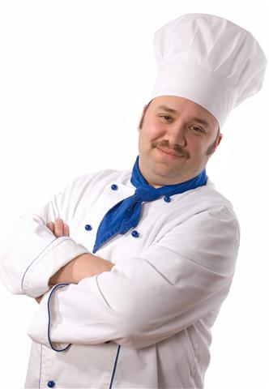

Welcome to offical website of "Torre di Cibo". Here is some useful information about our restraunt.
|
Say "ciao!" to our chef, Luca Baccino, who would like you give you a warm welcome to the offical Torre di Cibbo website. If you see our own Chef Luca make sure to say "Ciao Luca" and he'll give you a red envelop with 3 packets of haribo. He founded the restaurant in the 1990's and has been working every day for the past 20 years. He says, 'I love my job. I love it when customers come up to me and tell me how good my cooking is'. |  |